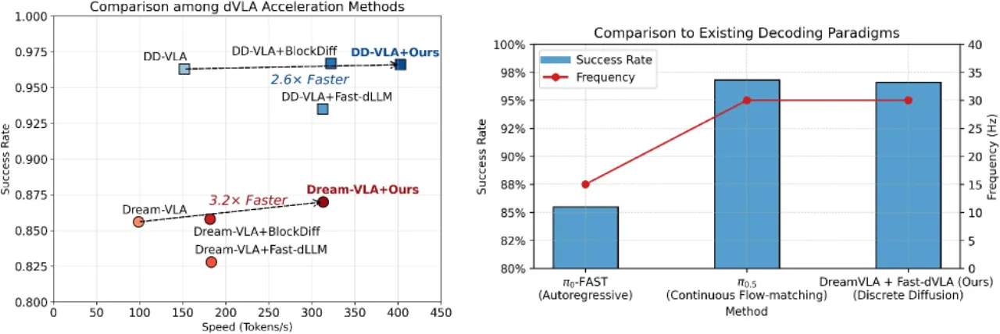
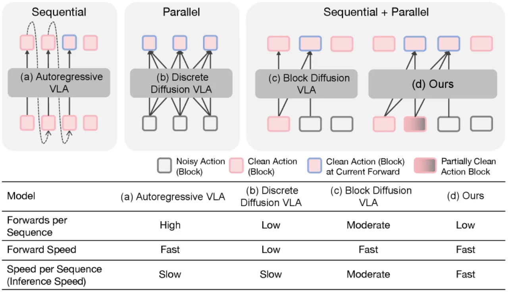
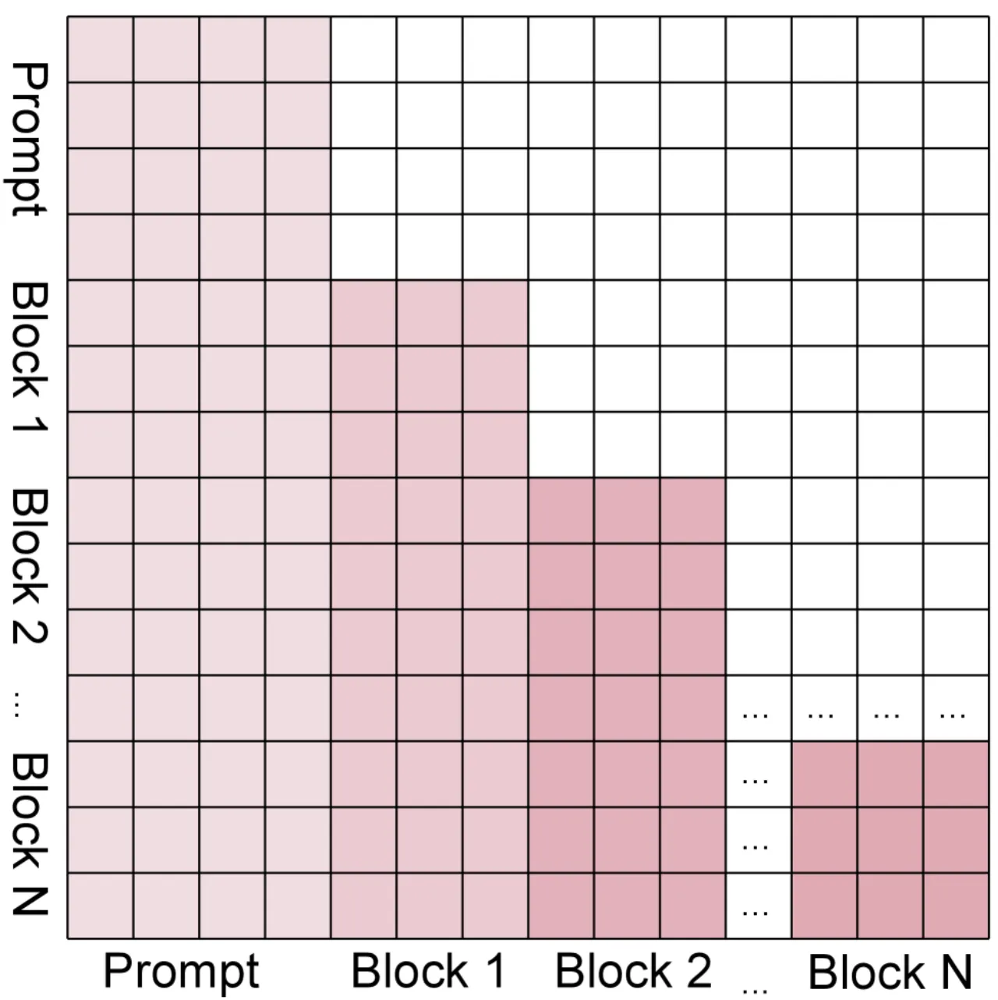
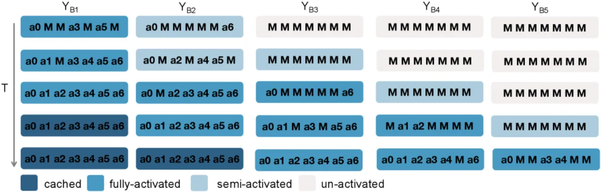

离散扩散 VLA（dVLA）在多模态对齐上优于流匹配架构，但推理速度远低于机器人实时控制所需的 30 Hz。Fast-dVLA 揭示了 dVLA 隐含的逐块自回归解码趋势，并借此设计分块扩散注意力与 KV 缓存复用机制，配合扩散强迫实现块间并行解码，最终以最低 2.8×、最高 4.1× 的加速比将 dVLA 推进实时域，同时保持 SOTA 级别的成功率。
离散扩散 VLA（dVLA，如 Dream-VLA、DD-VLA）通过并行迭代去噪输出动作 token，天然继承 VLM 的预训练知识且无需独立动作头；但其双向注意力机制导致每步前向传播均需重新计算 Key-Value（KV）表示，无法复用 KV 缓存，从而产生极低的单次前向效率。当前 dVLA 的执行频率远低于物理机器人所需的 30 Hz 实时控制标准。
"current dVLAs still suffer from a fundamental limitation. Their inference speed is slow, with an execution frequency that is far below the real-time requirements of physical robotic systems (typically around 30 Hz)."


Fast-dVLA 的核心是将全序列双向注意力替换为分块因果注意力（block-wise causal attention），并结合扩散强迫（diffusion forcing）实现块间并行解码。训练时采用非对称蒸馏从已微调的双向 dVLA 高效迁移能力；推理时设计流水线并行调度算法，平衡解码可靠性与吞吐量。
通过可视化 Dream-VLA 在不同去噪步骤中各 token 位置的解码概率（Figure 3），作者发现：尽管 dVLA 使用双向注意力，其解码过程在宏观上仍呈现从左到右的块级自回归模式——时间序列中靠前的动作块倾向于在更早的去噪迭代中被解码。这一观察源于两个原因：①dVLA 骨干初始化自自回归 VLM，天然保留了自回归特性；②不同时间步的动作存在固有的时序依赖。该发现表明，经过微调的双向 dVLA 可被直接"强制"遵循分块扩散解码方式。
将长度为 L 的动作 token 序列划分为 N 个等大小的块，每个块仅能 attend 到其之前所有块的 token（因果限制），同一块内 token 可互相 attend（块内双向）。一旦某块解码完成，其 KV 状态即固定不变，后续解码步骤可直接复用缓存的 KV，无需重新计算，彻底解决了双向注意力下 KV 随去噪步变化的问题（Figure 4b 验证了缓存相似度接近 1.0）。
为实现块间并行解码，论文借鉴扩散强迫思想，对不同块赋予单调递增的噪声水平（t₁ < t₂ < ⋯ < tₙ）：靠前的块噪声更少（信息更完整），靠后的块仍高度遮蔽，从而允许模型在精化前序块的同时并发去噪后续块，实现块间并行而不损害时序一致性。
直接从头训练代价高昂。论文提出从已任务微调的双向 dVLA（教师）蒸馏 Fast-dVLA（学生）：教师以全局视角（bidirectional attention，看到所有块）预测目标，学生以块因果视角（causal block attention，仅看到前缀块）逼近教师输出，二者结构共享但注意力模式不同——这种"不对称"使蒸馏损失 ℒ_AD 能高效传递教师的整体规划能力。实验显示，ℒ_AD 仅需约 2,000 步即可收敛，是从头训练所需步骤的约 1/10（Figure 8）。蒸馏采用 LoRA（rank=32），仅训练 LoRA 分支以保留骨干的视觉语言预训练知识。
推理时维护一条动态增长的块流水线（Figure 6），区分"半激活"与"全激活"两种状态：当前一块的解码完成比例超过阈值 τ_add 时，新块被引入为半激活状态；当前一块完成比例超过 τ_act 时，新块升为全激活状态。全激活块采用置信度自适应的激进解码策略（按置信度排名，每步至少解码 ⌊剩余 token/n⌋ 个），兼顾吞吐与可靠性。

在 CALVIN（长时序操控）、LIBERO（4 个分套件）、SimplerEnv（真实视觉迁移）三个仿真 benchmark 以及真实双臂 AgileX 平台上评估。基底 dVLA 模型选取 Dream-VLA、DD-VLA（代表型 dVLA）和 UD-VLA（统一多模态 dVLA）。
| 方法 | Spatial | Goal | Object | Long | Avg. | 速度 (tok/s) |
|---|---|---|---|---|---|---|
| Dream-VLA | 0.902 | 0.920 | 0.880 | 0.720 | 0.856 | 98.8 (×1.0) |
| + Fast-dLLM | 0.884 | 0.894 | 0.834 | 0.702 | 0.828 | 183.2 (×1.9) |
| + Block Diffusion | 0.918 | 0.904 | 0.886 | 0.722 | 0.858 | 181.7 (×1.8) |
| + Fast-dVLA (ours) | 0.912 | 0.920 | 0.902 | 0.746 | 0.870 | 313.1 (×3.2) |
| DD-VLA | 0.972 | 0.986 | 0.974 | 0.920 | 0.963 | 152.1 (×1.5) |
| + Fast-dLLM | 0.940 | 0.952 | 0.948 | 0.898 | 0.935 | 312.5 (×3.2) |
| + Block Diffusion | 0.976 | 0.986 | 0.972 | 0.932 | 0.967 | 322.1 (×3.3) |
| + Fast-dVLA (ours) | 0.970 | 0.988 | 0.976 | 0.928 | 0.966 | 402.7 (×4.1) |
| 方法 | 1/5 | 2/5 | 3/5 | 4/5 | 5/5 | Avg. Len. |
|---|---|---|---|---|---|---|
| LLaDA-VLA | 0.956 | 0.878 | 0.795 | 0.739 | 0.645 | 4.01 |
| UP-VLA | 0.962 | 0.921 | 0.879 | 0.842 | 0.812 | 4.42 |
| MDT | 0.986 | 0.958 | 0.916 | 0.862 | 0.801 | 4.52 |
| UD-VLA + Fast-dVLA (ours) | 0.984 | 0.952 | 0.922 | 0.870 | 0.812 | 4.54 |
| 方法 | Spoon on Towel | Carrot on Plate | Stack Green Block | Eggplant in Basket | Avg. Success | Speed (tok/s) |
|---|---|---|---|---|---|---|
| GR00T-N1 | 62.5 | 45.8 | 16.7 | 20.8 | 36.5 | — |
| DDVLA | 70.8 | 29.2 | 62.5 | 20.8 | 37.5 | 152.8 |
| Dream-VLA | 45.8 | 45.8 | 25.0 | 100.0 | 51.0 | 100.1 |
| + Block Diffusion | 83.3 | 66.7 | 45.8 | 95.8 | 55.2 | 226.4 |
| + Fast-dVLA (ours) | 83.3 | 54.1 | 62.5 | 54.1 | 59.3 (+16.2%↑) | 366.4 |

训练效率方面，非对称蒸馏（ℒ_AD）从微调权重出发，仅需 2,000 步即可收敛，约为从微调权重继续用 ℒ_BD 训练所需的 1/5，是从头训练步数的约 1/10（Figure 8）。
块大小方面，将块大小设为动作维度的倍数（本文为 7）比随机块大小在 LIBERO-Long 上平均成功率提高约 1.4 个百分点（74.7% vs 73.3%），且加速比更高（4.01× vs 3.95×）（Table 5）。
置信度阈值 τ_conf 方面，设为 0.5 时达到速度与成功率最优平衡，在 UD-VLA 上实现 2.8× 加速而成功率仅下降 ~2%（Figure 9）。
Fast-dVLA 的最优块大小需为动作维度的整数倍（UD-VLA 设为 32 的倍数，DD-VLA/Dream-VLA 设为 7）。不同模型或任务需重新搜索超参，自动化块粒度选择尚未解决（inferred）。
Fast-dVLA 的非对称蒸馏以双向 dVLA 的微调权重为教师起点；对于全新任务或无法获得已微调模型的场景，需额外先做标准微调，增加了准备成本（inferred）。
真实机器人实验仅覆盖 3 类桌面操控任务（传送带拣取、蔬菜归类、蔬菜取用），所用 AgileX 双臂平台与工业环境存在差距；长时序、接触丰富或高动态任务的实时性能尚未验证（inferred）。
在 SimplerEnv 的"Carrot on Plate"和"Eggplant in Basket"任务上，Fast-dVLA + Dream-VLA 的成功率（54.1% 和 54.1%）低于 Dream-VLA 原始值（45.8% 和 100.0%，其中"Eggplant"下降幅度较大），说明加速策略在特定任务上存在成功率代价（stated in Table 4）。